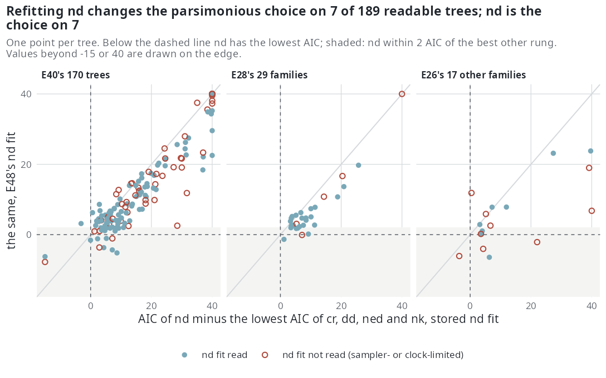

E48 — the nd rung refitted on the real trees under the current build
| Status | complete (217 of 217 trees, none hung, none failed). The parsimonious choice changes on 5 of 155 readable E40 trees, 1 of 25 E28 families and 1 of 9 readable E26 families; the E26 set alone crosses the 10% threshold. The pairs rule still fails on the choice. The pendant-age speciation coefficient is negative on 28 of 30 read family fits and 92 of 109 read E40 fits |
| Package build | emphasis 1.0.0 at main b8d7b10 (the build with the E-step clock); the registration names 397bf3f |
| Driver / analysis | sim/E48-nd-refit.R, sim/E48-launch.sh, sim/E48-sets.csv / sim/E48-analysis.R |
| Data | results/E48/: trees.csv (one row per tree), fits.csv (the five rungs per tree, stored and new nd), choices.csv, choice-table.csv, nd-coefficients.csv, analysis.txt (every number on this page), build.txt; results/E48.log. The per-tree fit files are kept outside the repository |
Question
Since emphasis 4e0b9dd (2026-10-15) the likelihood holds \(D\) constant between events, as the simulator does (E44). Every nd fit of E26, E28 and E40 was made under the earlier likelihood, which the package no longer computes; the choice tables, E40's pairs rule and E41's reading of nd edges rest on those fits. E48 refits the nd rung alone and rereads them. Step 0.8 of the estimability plan.
Design
| trees | three sets, each with its own stored fits: E40's 170 trees with a stored fit (the five stopped trees left out), E28's 29 families, and the 18 families of E26 not in E28; 217 in all. Macropodidae, one of the 18, was refused by E26's reading for a tip spread of 19% (limit 15%); it was refitted and is left out of every table here, as it is from E26's |
| reading of a tree | as sim/E25-real.R reads it: binary, tip edges extended to the deepest tip, at its set's sampling fraction |
| families in several sets | refitted once per set, from that set's own dd fit |
| model | nd on the exponential link at the tree's \(\rho\) |
| box | auto_bounds(model = "nd") on the tree |
| draws, iterations | 300 draws, 300 iterations as the budget |
| clock | four hours per fit; one tree per process with a hard limit of six hours, so that an E-step that does not return ends as a recorded hang |
| start | nested from the stored dd estimate, as estimate_rates(model = "all") starts it |
| ranking | per tree, compare_models() on the stored cr, dd, ned and nk fits with the new nd fit in place of the stored one; the stored ranking recorded beside it |
The stored rungs' log-likelihoods come from builds whose likelihood for models without \(D\) is the current one: the changes since f30a791 that touch the likelihood concern \(D\) only.
Pre-set rule
- A new
ndfit is read when its effective sample is at least 10 and it did not end on its clock; otherwise it is sampler-limited or clock-limited, counted and not read. A tree stopped by the hard limit is reported as hung. - The choice tables, per set and for E28 and E26 merged as in the biology paper: the parsimonious choice (fewest parameters within 2 AIC of the minimum) first and the minimum-AIC model beside it, over the trees whose chosen fit has an effective sample of at least 10, with the number of trees whose choice changes from the stored one in each direction. If the parsimonious choice changes on more than 10% of a set's readable trees, that set's choice table in the papers and on the site is replaced by E48's; otherwise the tables stand with the
ndrow updated. - E40's pairs rule recomputed with the new
ndfits, thresholds unchanged: agreement on the parsimonious choice on at least 70% of the pairs where both chosen fits are read, and on the sign of each lineage-level coefficient read in both on at least 80%; fewer than 10 readable pairs is not evaluable. - E41's reading of edges: a parameter of a new
ndfit within \(10^{-6}\) of the box span of a bound is on an edge, reported as not bounded by the tree in that direction, and not read; the share of readndfits with \(\beta_D\) or \(\gamma_D\) on an edge is reported. - The
ndcoefficient: over read fits with \(\beta_D\) off its edges, the number with \(\beta_D < 0\) and the factor per standard deviation of \(D\), replacing the counts the biology paper quotes from the stored fits.
How the analysis applies rule 2: the parsimonious choice is recomputed from the five AIC values (ties between models with the same number of parameters go to the lower AIC) and agrees with the driver's compare_models() on all 217 trees, new and stored; a tree is readable when the chosen fit has an effective sample of at least 10 and, when the choice is nd, the nd fit is read under rule 1. The stored tables of E26 and E28 applied the effective-sample test to the minimum-AIC fit, not the parsimonious one; analysis.txt gives every count under that denominator too, which reproduces the published stored counts (E28: 25 usable; merged: 36), and no verdict differs between the two.
Results
Rule 1, the new fits. No tree hung and no fit failed. 145 of 217 nd fits are read; 69 are sampler-limited and 3 clock-limited. By set: E40 113 read of 170 (54 sampler-limited, 3 clock-limited; 25 ended on the clock, 22 of them also below 10 effective draws), E28 24 of 29, E26 8 of 18. Seven fits met the stopping rule, all on E40 trees; the rest ran to the 300-iteration cap (182) or the clock (28). The median effective sample is 29.3 on E40, 32.7 on E28 and 9.0 on the 18 E26 trees; 17 of the 94 trees below 100 tips are sampler-limited against 52 of the 123 from 100 tips. The new nd AIC is lower than the stored one on 178 of 217 trees (median change -3.5 on E40 and E28, -3.7 on E26). Under the stored fits E40's nd was not read on 111 of 170 trees; under the new ones on 57.
Rule 2, the choice tables. Readable trees, parsimonious choice and minimum AIC, new (stored):
| set | readable | cr |
dd |
nd |
ned |
nk |
lineage-level | minimum AIC: nd / lineage-level |
changed |
|---|---|---|---|---|---|---|---|---|---|
| E40 | 155 (156) | 15 (17) | 30 (32) | 5 (1) | 48 (49) | 57 (57) | 110 (107) | 7 (2) / 123 (123) | 5 of 155, 3.2% |
| E28 | 25 (26) | 4 (4) | 6 (6) | 1 (0) | 6 (8) | 8 (8) | 15 (16) | 1 (0) / 19 (20) | 1 of 25, 4.0% |
| E26, other 17 | 9 (11) | 3 (4) | 3 (4) | 1 (0) | 0 (1) | 2 (2) | 3 (3) | 1 (0) / 3 (4) | 1 of 9, 11.1% |
| E28 and E26 merged | 34 (37) | 7 (8) | 9 (10) | 2 (0) | 6 (9) | 10 (10) | 18 (19) | 2 (0) / 22 (24) | 2 of 34, 5.9% |
The changes among readable trees, all to or from nd:
| set | family | stored | new | new nd fit |
|---|---|---|---|---|
| E40 | Acanthizidae (63 tips) | cr |
nd |
ESS 110, cap |
| E40 | Dasyuridae (63) | dd |
nd |
ESS 14, cap |
| E40 | Meliphagidae (177) | dd |
nd |
ESS 37, cap |
| E40 | Procellariidae (81) | dd |
nd |
ESS 16, cap; \(\beta_D\) on its lower edge |
| E40 | Ctenomyidae | nd |
dd |
the stored nd was not read |
| E28 | Meliphagidae (177) | ned |
nd |
ESS 25, cap |
| E26 | Procellariidae (81) | cr |
nd |
ESS 14, cap; \(\beta_D\) on its lower edge |
Seven trees choose nd on a sampler-limited fit and are not readable: five moved to it and left the readable count, Ardeidae (E40, from cr), Sturnidae (E40 and E28, from ned), Dasyuridae and Strigidae (E26, from ned and dd); Chamaeleonidae (E26) and bird-048-Tyrannidae (E40) chose nd before and after. Of the 14 trees whose new parsimonious choice is nd, 7 rest on a read fit and 1 of those met the stopping rule (bird-056-Phylloscopidae, ESS 257); the other 6 ran to the 300-iteration cap. By minimum AIC nd also wins on Motacillidae and Mustelidae (E40), where the parsimonious choice stays cr and dd.
On every E40 tree, as E40's table counts them, the parsimonious choice is cr 15, dd 30, nd 8, ned 50, nk 67: a lineage-level model on 125 of 170 (stored 121); by set and class, class-tree bird clades 0, 3, 2, 36, 36 (unchanged), class-tree mammal clades 6, 11, 0, 6, 12 (unchanged), family trees of birds 6, 10, 5, 6, 17 (stored 8, 12, 0, 7, 17), of mammals 3, 6, 1, 2, 2 (unchanged). The minimum-AIC rule gives nk 77, ned 51, dd 23, nd 10, cr 9 and differs from the parsimonious choice on 17 trees (stored 20). The chosen fit is not read (below 10 effective draws or on the clock) on 21 trees (stored 20). On the merged table, read as the biology paper reads it (minimum AIC; a lineage-level winner must lead dd by more than 2), 33 families are usable and 20 have a lineage-level verdict (nk 12, ned 6, nd 2), 9 diversity-dependent and 4 undecided, against 36, 21 (nk 12, ned 9), 10 and 5 stored; on E28 alone 24 usable, 17 lineage-level (nk 10, ned 6, nd 1), against 25 and 18.

nd minus the lowest AIC among cr, dd, ned and nk, under the stored nd fit (horizontal) and E48's (vertical); below the dashed line nd has the lowest AIC, and in the shaded band it lies within 2 AIC of the best other rung. Most points fall below the diagonal, the new nd AIC being lower on 178 of 217 trees, but few cross into the band: the choice moves on the handful of trees that were already near it. Open circles are sampler- or clock-limited nd fits, which carry no choice; 31 points beyond -15 or 40 are drawn on the edge, Macropodidae is left out.Rule 3, E40's pairs. On the 29 pairs with both members fitted, both chosen fits are read on 18 (as before), and the clade and its family tree make the same parsimonious choice on 3 of the 18 (17%), unchanged; over all 29 the count is 10 (34%), also unchanged. The one pair whose choice moved is Meliphagidae, where the family tree went from dd to nd and the clade stays ned. On the sign, with the new nd fits read off their \(\beta_D\) edge: \(D\) is read on both members of 9 pairs and falls on the same side of 1 on 8; \(\mathrm{ED}\) 10 of 10 and \(K\) 11 of 11 as before; pooled 29 of 30 (97%).
Rule 4, edges. Of the 145 read nd fits, 47 (32%) hold \(\beta_D\) or \(\gamma_D\) on an edge: E40 36 of 113, E28 7 of 24, E26 4 of 8. \(\beta_D\) is on an edge on 6, all lower edges; \(\gamma_D\) on 42, 30 of them upper edges. Beside them, \(\gamma_N\) is on its lower edge on 54 read fits and \(\gamma_0\) on 45, the extinction edges E41 found flat on the stored rungs.
Rule 5, the pendant-age coefficient. Over read fits with \(\beta_D\) off its edges, the speciation factor per standard deviation of \(D\):
| set | read, \(\beta_D\) off edge | \(\beta_D < 0\) | median factor (range) | stored: read, \(< 0\), median |
|---|---|---|---|---|
| E40 | 109 | 92 | 0.78 (0.37 to 1.72) | 59, 41, 0.92 |
| E28 | 23 | 21 | 0.72 (0.38 to 1.06) | 19, 15, 0.86 |
| E26, other 17 | 7 | 7 | 0.66 (0.55 to 0.96) | 5, 4, 0.80 |
| E28 and E26 merged | 30 | 28 | 0.69 (0.38 to 1.06) | 24, 19, 0.83 |
The stored column applies each record's own rule (effective sample at least 10, and for E40 not on the clock), with no edge rule. On the 75 trees read under both, the sign agrees on 58 and the rank correlation of the two factors is 0.93. Where nd is the new parsimonious choice and its \(\beta_D\) is read, the factor is 0.48 (Acanthizidae), 0.52 (Dasyuridae), 0.72 (Meliphagidae, E40 and E28) and 1.72 (bird-056-Phylloscopidae). The extinction coefficient \(\gamma_D\), off its edge on 103 read fits, is negative on 31.
Conclusion
Rule 1 leaves 145 of 217 nd fits read, against 59 of E40's 170 under the stored fits; the nd rung is still the one most often sampler-limited (69 of 217), mostly on trees from 100 tips. Rule 2: below the threshold on E40 (3.2%), E28 (4.0%) and the merged table (5.9%), so those tables stand with the nd row updated; above it on the E26 set of 17 (1 of 9, 11.1%), so that set's table is replaced by E48's. The E26 trigger rests on one family, Procellariidae, whose new nd choice holds \(\beta_D\) on its lower edge. Rule 3: not met, as before: the choice agrees on 3 of 18 readable pairs (17% against 70%) and the sign on 29 of 30 (97% against 80%), so the class-tree clades are reported and not read. Rule 4: 32% of read nd fits hold \(\beta_D\) or \(\gamma_D\) on an edge, almost all of them \(\gamma_D\). Rule 5: the pendant-age coefficient on speciation is negative on 28 of 30 read family fits (median factor 0.69) and on 92 of 109 read E40 fits (median 0.78), where the stored fits gave 19 of 24 (0.83) and 41 of 59 (0.92).
What it shows: the change of likelihood moves nd's AIC by a few units and its coefficient toward a lower speciation rate for lineages older than their contemporaries; the choice tables move by one to seven trees a set (one to five among readable trees), all to or from nd, and the count of trees with a lineage-level parsimonious choice changes by at most four. The statement that \(D\) has no sign on real trees, made from the stored fits, does not hold under the current likelihood: the sign is negative on 84% of read E40 fits and 93% of read family fits. What it does not show: the fits are unconditioned on survival and the nd budget is the stored one, so 69 of the 72 unread fits are sampler-limited, and only 7 of 217 met the stopping rule; under the earlier likelihood nd returned \(\beta_D\) on simulated trees with the right sign and short of its size (E19, E31), and whether the current one removes that shortfall is E46's question. A negative \(\beta_D\) is also what inherited rates produce without any effect of age, and \(D\) and \(\mathrm{ED}\) share the pendant edge (E39), so a sign is not a mechanism. The paths, which also read \(D\), are rerun within E47, and the accuracy of nd under the current likelihood is E46's.
Related
- E44: the D likelihood checked against the simulator on complete trees.
- E26, E28, E40: the stored fits and choice tables it rereads.
- E41: the reading of edges applied to the new
ndfits. - E43: ran on the same host first.
- Real phylogenies: the 170 trees, with the
ndcounts now E48's. - Estimability: step 0.8; E46 measures
nd's accuracy under the current likelihood.